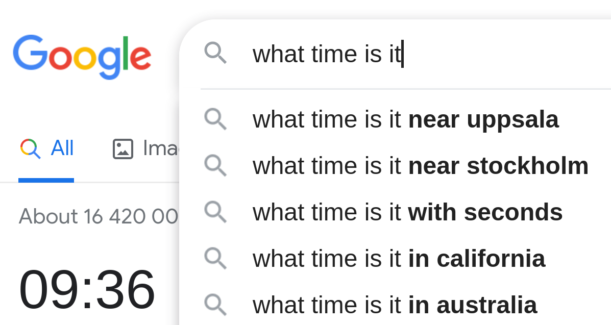

Recurrent neural networks
Per Unneberg
19 January, 2022
Perceptron (single neuron)

Architecture
A single neuron has \(n\) inputs \(x_i\) and an output \(y\). To each input is associated a weight \(w_i\).
Activity rule
The activity rule is given by two steps:
\[a = \sum_{i} w_ix_i, \quad i=0,...,n\]
\[\begin{array}{ccc} \mathrm{activation} & & \mathrm{activity}\\ a & \rightarrow & y(a) \end{array}\]
(MacKay, 2003)
Perceptron (single neuron)

Architecture
A single neuron has \(n\) inputs \(x_i\) and an output \(y\). To each input is associated a weight \(w_i\).
Activity rule
The activity rule is given by two steps:
\[a = \sum_{i} w_ix_i, \quad i=0,...,n\]
\[\begin{array}{ccc} \mathrm{activation} & & \mathrm{activity}\\ a & \rightarrow & y(a) \end{array}\]
(MacKay, 2003)
Perceptron (single neuron)

\[a = w_0 + \sum_{i} w_ix_i, \quad i=1,...,n\]
\[y = y(a) = g\left( w_0 + \sum_{i=1}^{n} w_ix_i \right)\]
or in vector notation
\[y = g\left(w_0 + \mathbf{X^T} \mathbf{W} \right)\]
where:
\[\quad\mathbf{X}= \begin{bmatrix}x_1\\ \vdots \\ x_n\end{bmatrix}, \quad \mathbf{W}=\begin{bmatrix}w_1\\ \vdots \\ w_n\end{bmatrix}\]
(Alexander Amini, 2021)
Simplified illustration and notation

Architecture
Vectorized versions: input \(\boldsymbol{x}\), weights \(\boldsymbol{w}\), output \(\boldsymbol{y}\)
Activity rule
\[a = \boldsymbol{wx}\]
Feed forward network

Simplified illustration

Simplified illustration

Motivation

Motivation

Motivation

Motivation

Sequences around us
Word prediction

Language translation

Time series

(Herzen et al., 2021)
Genomics

(Shen et al., 2018)
Types of models
one to one

many to one

one to many

many to many

Image classification

Sentiment analysis

Image captioning

Machine translation

(Karpathy, 2015)
Recurrent Neural Networks (RNNs)

Feed forward network implementation to sequential data


Assume multiple time points.
Feed forward network implementation to sequential data


Assume multiple time points.
Feed forward network implementation to sequential data


Assume multiple time points.
- Dependency of inputs not modelled such that ambiguous sequences cannot be be distinguished:
“dog bites man” vs “man bites dog”
Feed forward network implementation to sequential data


Assume multiple time points.
- Time points are modelled individually ( \(\hat{Y}_t = f(X_t)\) )
Feed forward network implementation to sequential data


Assume multiple time points.
- Time points are modelled individually ( \(\hat{Y}_t = f(X_t)\) )
- Also want dependency on previous inputs ( \(\hat{Y}_t = f(..., X_2, X_1)\) )
Adding recurrence relations


Adding recurrence relations


Adding recurrence relations


Adding recurrence relations


Folded representation
Unfolded representation
Add a hidden state \(h\) that introduces a dependency on the previous step:
\[ \hat{Y}_t = f(X_t, h_{t-1}) \]
Recurrent Neural Networks

Add recurrence relation where current hidden cell state \(h_t\) depends on input \(x_t\) and previous hidden state \(h_{t-1}\) via a function \(f_W\) that defines the network parameters (weights):
\[ h_t = f_\mathbf{W}(x_t, h_{t-1}) \]
Note that the same function and weights are used across all time steps!
Recurrent Neural Networks - pseudocode

class RNN:
# ...
# Description of forward pass
def step(self, x):
# update the hidden state
self.h = np.tanh(np.dot(self.W_hh, self.h) + np.dot(self.W_xh, x))
# compute the output vector
y = np.dot(self.W_hy, self.h)
return y
rnn = RNN()
ff = FeedForwardNN()
for word in input:
output = rnn.step(word)
prediction = ff(output) Vanilla RNNs

Output vector
\[ \hat{Y}_t = \mathbf{W_{hy}^T}h_t \]
Update hidden state
\[ h_t = \mathsf{tanh}(\mathbf{W_{xh}^T}X_t + \mathbf{W_{hh}^T}h_{t-1}) \]
Input vector
\[ X_t \]
Vanilla RNNs
(Olah, 2015)

Vanilla RNNs

Vanilla RNNs

Vanilla RNNs

Note: \(\mathbf{W_{xh}}\), \(\mathbf{W_{hh}}\), and \(\mathbf{W_{hy}}\) are shared across all cells!
Example: Box & Jenkins airline passenger data set

(Onnen, 2021)
Example: generate test and training data

Partition time series into training and test data sets at an e.g. 2:1 ratio:
import rnnutils
import numpy as np
df = rnnutils.airlines()
data = np.array(df['passengers'].values.astype('float32')).reshape(-1, 1)
train, test, scaler = rnnutils.make_train_test(data) Example: prepare data for keras

time_steps = 12
trainX, trainY, trainX_indices, trainY_indices = rnnutils.make_xy(train, time_steps)
testX, testY, testX_indices, testY_indices = rnnutils.make_xy(test, time_steps) Example: fit the model and evaluate
history = model.fit(trainX, trainY, epochs=20, batch_size=1, verbose=2)
Ytrainpred = model.predict(trainX)
Ytestpred = model.predict(testX) rnnutils.plot_history(history) data = {'train': (model.predict(trainX), train, trainY_indices),
'test': (model.predict(testX), test, testY_indices)}
rnnutils.plot_pred(data, scaler=scaler, ticks=range(0, 144, 20), labels=df.year[range(0, 144, 20)]) 

Example: model topology writ out
## Model: "sequential"
## _________________________________________________________________
## Layer (type) Output Shape Param #
## =================================================================
## simple_rnn (SimpleRNN) (None, 3) 15
## _________________________________________________________________
## dense (Dense) (None, 1) 4
## =================================================================
## Total params: 19
## Trainable params: 19
## Non-trainable params: 0
## _________________________________________________________________
Example: model topology writ out
## Model: "sequential"
## _________________________________________________________________
## Layer (type) Output Shape Param #
## =================================================================
## simple_rnn (SimpleRNN) (None, 3) 15
## _________________________________________________________________
## dense (Dense) (None, 1) 4
## =================================================================
## Total params: 19
## Trainable params: 19
## Non-trainable params: 0
## _________________________________________________________________
(Verma, 2021)
NB! In keras, RNN input is a 3D tensor with shape [batch, timesteps, feature]
An RNN in numbers
(Karpathy, 2015)

Example network trained on “hello” showing activations in forward pass given input “hell”. The outputs contain confidences in outputs (vocabulary={h, e, l, o}). We want blue numbers high, red numbers low. P(e) is in context of “h”, P(l) in context of “he” and so on.
What is the topology of the network?
4 input units (features), 4 time steps, 3 hidden units, 4 output units
Recap: backpropagation algorithm in ffns
(Alexander Amini, 2021)

Recap: backpropagation algorithm in ffns
(Alexander Amini, 2021)

- perform forward pass and generate prediction
Recap: backpropagation algorithm in ffns
(Alexander Amini, 2021)

- perform forward pass and generate prediction
- calculate prediction error \(\epsilon_i\) wrt (known) output: \(\epsilon_i = \mathcal{L}(\hat{y}_i, y_i)\), loss function \(\mathcal{L}\)
Recap: backpropagation algorithm in ffns
(Alexander Amini, 2021)

- perform forward pass and generate prediction
- calculate prediction error \(\epsilon_i\) wrt (known) output: \(\epsilon_i = \mathcal{L}(\hat{y}_i, y_i)\), loss function \(\mathcal{L}\)
- back propagate errors and update weights to minimize loss
Backpropagation through time (BPTT)
(Alexander Amini, 2021)

Backpropagation through time (BPTT)
(Alexander Amini, 2021)

Backpropagation through time (BPTT)
(Alexander Amini, 2021)

Backpropagation through time (BPTT)
(Alexander Amini, 2021)

Backpropagation through time (BPTT)
(Alexander Amini, 2021)

Backpropagation through time (BPTT)
(Alexander Amini, 2021)

Errors are propagated backwards in time from \(t=t\) to \(t=0\).
Problem: calculating gradient may depend on large powers of \(\mathbf{W_{hh}}^{\mathsf{T}}\) (e.g. \(\delta\mathcal{L} / \delta h_0 \sim f((\mathbf{W_{hh}}^{\mathsf{T}})^t)\)
The effect of vanishing gradients on long-term memory
In layer \(i\) gradient size ~ \((\mathbf{W_{hh}}^{\mathsf{T}})^{t-i}\)
\(\downarrow\)
Weight adjustments depend on size of gradient
\(\downarrow\)
Early layers tend to “see” small gradients and do very little updating
\(\downarrow\)
Bias parameters to learn recent events
\(\downarrow\)
RNN suffer short term memory
(Olah, 2015)
“The clouds are in the _”

“I grew up in England … I speak fluent _”

Solutions to vanishing gradient
Activation function
ReLU (or leaky ReLU) instead of sigmoid or tanh

Weight initialization
Set bias=0, weights to identity matrix

More complex cells using “gating”
For example LSTM

Motivation behind LSTMs and GRUs
LSTM

GRU


Long Short Term Memory (LSTM) (Hochreiter & Schmidhuber, 1997) and Gated Recurrent Unit (GRU) (Cho et al., 2014) architectures were proposed to solve the vanishing gradient problem.
LSTM: Cell state flow and gating
(Olah, 2015)

LSTM adds cell state that in effect provides the long-term memory
Information flows in the cell state from \(c_{t-1}\) to \(c_t\).

Gates affect the amount of information let through. The sigmoid layer outputs anything from 0 (nothing) to 1 (everything).
(Cho et al., 2014)
In our preliminary experiments, we found that it is crucial to use this new unit with gating units. We were not able to get meaningful result with an oft-used tanh unit without any gating.
Forget, input, and output gates
forget gate

Purpose: reset content of cell state
input gate

Purpose: decide when to read data into cell state
output gate

Purpose: read entries from cell state
Sigmoid squishes vector \([\boldsymbol{h_{t-1}}, \boldsymbol{x_t}]\) (previous hidden state + input) to \((0, 1)\) for each value in cell state \(c_{t-1}\), where 0 means “reset entry”, 1 “keep it”
The forget gate

Purpose: decide what information to keep or throw away
Sigmoid squishes vector \([\boldsymbol{h_{t-1}}, \boldsymbol{x_t}]\) (previous hidden state + input) to \((0, 1)\) for each value in cell state \(c_{t-1}\), where 0 means “forget entry”, 1 “keep it”
\[ f_t = \sigma(W_f \cdot [h_{t-1}, x_t] + b_f) \]
Add new information - the input gate

Two steps to adding new information:
- sigmoid layer decides which values to update
Add new information - get candidate values

Two steps to adding new information:
- sigmoid layer decides which values to update
- tanh layer creates vector of new candidate values \(\tilde{c}_t\)
\[ i_t = \sigma (W_i \cdot [h_{t-1}, x_t] + b_i)\\ \tilde{c}_t = \mathsf{tanh}(W_c \cdot [h_{t-1}, x_t] + b_c) \]
Updating the cell state

- multiply old cell state by \(f_t\) to forget what was decided to forget
- add new candidate values scaled by how much we want to update them \(i_t * \tilde{c}_t\)
\[ c_t = f_t * c_{t-1} + i_t * \tilde{c}_t \]
Cell output

Output is filtered version of cell state.
- sigmoid output gate decides what parts of cell state to output
- push cell state through tanh and multiply by sigmoid output
\[ o_t = \sigma(W_o [h_{t-1}, x_t] + b_o)\\ h_t = o_t * \mathsf{tanh}(c_t) \]
LSTM: putting it together

Intuition
- if forget ~ 1, input ~ 0, \(c_{t-1}\) will be saved to next time step (input irrelevant for cell state)
- if forget ~ 0, input ~ 1, pay attention to the current input
LSTM: putting it together
(Zhang et al., 2021)

\[ f_t = \sigma(W_f \cdot [h_{t-1}, x_t] + b_f)\\ i_t = \sigma (W_i \cdot [h_{t-1}, x_t] + b_i)\\ \tilde{c}_t = \mathsf{tanh}(W_c \cdot [h_{t-1}, x_t] + b_c)\\ c_t = f_t * c_{t-1} + i_t * \tilde{c}_t\\ o_t = \sigma(W_o [h_{t-1}, x_t] + b_o)\\ h_t = o_t * \mathsf{tanh}(c_t) \]
\[ x_t \in \mathbb{R}^{n\times d}, h_{t-1} \in \mathbb{n \times h}, i_t \in \mathbb{R}^{n\times h}, f_t \in \mathbb{R}^{n\times h}, o_t \in \mathbb{R}^{n\times h}, \]
and
\[ W_f \in \mathbb{R}^{n \times (h+d)}, W_i \in \mathbb{R}^{n \times (h+d)}, W_o \in \mathbb{R}^{n \times (h+d)}, W_c \in \mathbb{R}^{n \times (h+d)} \]
GRU

- forget and input states combined to single update gate
- merge cell and hidden state
- simpler model than LSTM